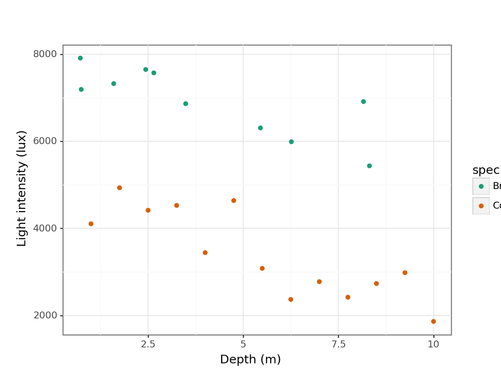

# A collection of R packages designed for data science
library(tidyverse)
# Converts stats functions to a tidyverse-friendly format
library(rstatix)
# Creates diagnostic plots using ggplot2
library(ggResidpanel)
# Helper functions for tidying data
library(broom)8 Linear regression with grouped data
Learning outcomes
Questions
- How do I perform a linear regression on grouped data?
Objectives
- Be able to perform a linear regression on grouped data in R
- Calculate the linear regression for individual groups and visualise these with the data
- Understand and be able to create equations of the regression line
- Be able to deal with interactions in this context
8.1 Libraries and functions
Click to expand
8.1.1 Libraries
8.1.2 Functions
# Gets underlying data out of model object
broom::augment()
# Creates diagnostic plots
ggResidpanel::resid_panel()
# Performs an analysis of variance
stats::anova()
# Creates a linear model
stats::lm()8.1.3 Libraries
# A fundamental package for scientific computing in Python
import numpy as np
# A Python data analysis and manipulation tool
import pandas as pd
# Simple yet exhaustive stats functions.
import pingouin as pg
# Python equivalent of `ggplot2`
from plotnine import *
# Statistical models, conducting tests and statistical data exploration
import statsmodels.api as sm
# Convenience interface for specifying models using formula strings and DataFrames
import statsmodels.formula.api as smf8.1.4 Functions
# Computes natural logarithm of value
numpy.log()
# Plots the first few rows of a DataFrame
pandas.DataFrame.head()
# Reads in a .csv file
pandas.read_csv()
# Creates a model from a formula and data frame
statsmodels.formula.api.ols()8.2 Purpose and aim
A linear regression analysis with grouped data is used when we have one categorical predictor variable (or factor), and one continuous predictor variable. The response variable must still be continuous however.
For example in an experiment that looks at light intensity in woodland, how is light intensity (continuous: lux) affected by the height at which the measurement is taken, recorded as depth measured from the top of the canopy (continuous: meters) and by the type of woodland (categorical: Conifer or Broad leaf).

When analysing these type of data we want to know:
- Is there a difference between the groups?
- Does the continuous predictor variable affect the continuous response variable (does canopy depth affect measured light intensity?)
- Is there any interaction between the two predictor variables? Here an interaction would display itself as a difference in the slopes of the regression lines for each group, so for example perhaps the conifer data set has a significantly steeper line than the broad leaf woodland data set.
In this case, no interaction means that the regression lines will have the same slope. Essentially the analysis is identical to two-way ANOVA.
- We will plot the data and visually inspect it.
- We will test for an interaction and if it doesn’t exist then:
- We can test to see if either predictor variable has an effect (i.e. do the regression lines have different intercepts? and is the common gradient significantly different from zero?)
We will first consider how to visualise the data before then carrying out an appropriate statistical test.
8.3 Data and hypotheses
The data are stored in data/CS4-treelight.csv. This is a data frame with four variables; id, light, depth and species. light is the continuous response variable, depth is the continuous predictor variable and species is the categorical predictor variable.
Read in the data and inspect them:
# read in the data
treelight <- read_csv("data/CS4-treelight.csv")
# inspect the data
treelight# A tibble: 23 × 4
id light depth species
<dbl> <dbl> <dbl> <chr>
1 1 4106. 1 Conifer
2 2 4934. 1.75 Conifer
3 3 4417. 2.5 Conifer
4 4 4529. 3.25 Conifer
5 5 3443. 4 Conifer
6 6 4640. 4.75 Conifer
7 7 3082. 5.5 Conifer
8 8 2368. 6.25 Conifer
9 9 2777. 7 Conifer
10 10 2419. 7.75 Conifer
# ℹ 13 more rows# load the data
treelight_py = pd.read_csv("data/CS4-treelight.csv")
# and have a look
treelight_py.head() id light depth species
0 1 4105.646110 1.00 Conifer
1 2 4933.925144 1.75 Conifer
2 3 4416.527443 2.50 Conifer
3 4 4528.618186 3.25 Conifer
4 5 3442.610306 4.00 Conifer8.4 Summarise and visualise
# plot the data
ggplot(treelight,
aes(x = depth, y = light, colour = species)) +
geom_point() +
scale_color_brewer(palette = "Dark2") +
labs(x = "Depth (m)",
y = "Light intensity (lux)")
# plot the data
(ggplot(treelight_py,
aes(x = "depth",
y = "light",
colour = "species")) +
geom_point() +
scale_color_brewer(type = "qual", palette = "Dark2") +
labs(x = "Depth (m)",
y = "Light intensity (lux)")
)
It looks like there is a slight negative correlation between depth and light intensity, with light intensity reducing as the canopy depth increases. It would be useful to plot the regression lines in this plot.
# plot the data
ggplot(treelight,
aes(x = depth, y = light, colour = species)) +
geom_point() +
# add regression lines
geom_smooth(method = "lm", se = FALSE) +
scale_color_brewer(palette = "Dark2") +
labs(x = "Depth (m)",
y = "Light intensity (lux)")# plot the data
(ggplot(treelight_py,
aes(x = "depth",
y = "light",
colour = "species")) +
geom_point() +
# add regression lines
geom_smooth(method = "lm", se = False) +
scale_color_brewer(type = "qual", palette = "Dark2") +
labs(x = "Depth (m)",
y = "Light intensity (lux)"))Looking at this plot, there doesn’t appear to be any significant interaction between the woodland type (Broadleaf and Conifer) and the depth at which light measurements were taken (depth) on the amount of light intensity getting through the canopy as the gradients of the two lines appear to be very similar. There does appear to be a noticeable slope to both lines and both lines look as though they have very different intercepts. All of this suggests that there isn’t any interaction but that both depth and species have a significant effect on light independently.
8.5 Implement and interpret the test
In this case we’re going to implement the test before checking the assumptions (I know, let’s live a little!). You’ll find out why soon…
We can test for a possible interaction more formally:
anova(lm(light ~ depth * species,
data = treelight))Analysis of Variance Table
Response: light
Df Sum Sq Mean Sq F value Pr(>F)
depth 1 30812910 30812910 107.8154 2.861e-09 ***
species 1 51029543 51029543 178.5541 4.128e-11 ***
depth:species 1 218138 218138 0.7633 0.3932
Residuals 19 5430069 285793
---
Signif. codes: 0 '***' 0.001 '**' 0.01 '*' 0.05 '.' 0.1 ' ' 1Remember that depth * species is a shorthand way of writing the full set of depth + species + depth:species terms in R i.e. both main effects and the interaction effect.
Unfortunately there is no clear way of defining interaction models in pingouin. So we’re resorting back to statsmodels, just like we had to when we performed the Shapiro-Wilk test on the residuals.
If you haven’t loaded statsmodels yet, run the following:
import statsmodels.api as sm
import statsmodels.formula.api as smfNext, we create a linear model and get the .fit():
# create a linear model
model = smf.ols(formula = "light ~ depth * C(species)",
data = treelight_py)
# and get the fitted parameters of the model
lm_treelight_py = model.fit()To get the relevant values, we can print the summary of the model fit. This gives us a rather huge table. Don’t be too daunted by it - there is a logic to the madness and for now we’re mainly interested in the P>|t| column.
print(lm_treelight_py.summary()) OLS Regression Results
==============================================================================
Dep. Variable: light R-squared: 0.938
Model: OLS Adj. R-squared: 0.928
Method: Least Squares F-statistic: 95.71
Date: Thu, 25 Jan 2024 Prob (F-statistic): 1.19e-11
Time: 08:33:58 Log-Likelihood: -174.91
No. Observations: 23 AIC: 357.8
Df Residuals: 19 BIC: 362.4
Df Model: 3
Covariance Type: nonrobust
===============================================================================================
coef std err t P>|t| [0.025 0.975]
-----------------------------------------------------------------------------------------------
Intercept 7798.5655 298.623 26.115 0.000 7173.541 8423.590
C(species)[T.Conifer] -2784.5833 442.274 -6.296 0.000 -3710.274 -1858.893
depth -221.1256 61.802 -3.578 0.002 -350.478 -91.773
depth:C(species)[T.Conifer] -71.0357 81.309 -0.874 0.393 -241.217 99.145
==============================================================================
Omnibus: 1.435 Durbin-Watson: 2.176
Prob(Omnibus): 0.488 Jarque-Bera (JB): 1.269
Skew: 0.444 Prob(JB): 0.530
Kurtosis: 2.267 Cond. No. 31.8
==============================================================================
Notes:
[1] Standard Errors assume that the covariance matrix of the errors is correctly specified.As with two-way ANOVA we have a row in the table for each of the different effects. At this point we are particularly interested in the p-values. We need to look at the interaction first.
The interaction term between depth and species has a p-value of 0.393 (which is bigger than 0.05) and so we can conclude that the interaction between depth and species isn’t significant. As such we can now consider whether each of the predictor variables independently has an effect.
Both depth and species have very small p-values (2.86x10-9 and 4.13x10 -11) and so we can conclude that they do have a significant effect on light.
This means that the two regression lines should have the same non-zero slope, but different intercepts. We would now like to know what those values are.
8.5.1 Finding intercept values
Finding the intercept values is not entirely straightforward and there is some deciphering required to get this right.
For a simple straight line such as the linear regression for the conifer data by itself, the output is relatively straightforward:
I’m being a bit lazy here. Since I don’t want to save the filtered data in a separate object, I’m using the pipe to send the Conifer data to the lm() function. However, the first argument in the lm() function is not data, so we need to tell it specifically that the data is coming from the pipe. We do this with the . notation:
# filter the Conifer data and fit a linear model
treelight %>%
filter(species == "Conifer") %>%
lm(light ~ depth, data = .)
Call:
lm(formula = light ~ depth, data = .)
Coefficients:
(Intercept) depth
5014.0 -292.2 We have two options to obtain the intercept for conifers only. We could subset our data, keeping only the conifer values. We could then create a linear model of those data, and obtain the relevant intercept.
However, since we already created a model for the entire data set (including the interaction term) and printed the summary of that, we can actually derive the intercept value with the information that we’ve got.
In the coef table of the summary there are several values:
Intercept 7798.5655
C(species)[T.Conifer] -2784.5833
depth -221.1256
depth:C(species)[T.Conifer] -71.0357This tells us that the overall intercept value for the model with the interaction term is 7798.5655. The C(species)[T.Conifer] term means that, to go from this overall intercept value to the intercept for conifer, we need to add -2784.5833.
Doing the maths gives us an intercept of \(7798.5655 + (-2784.5833) = 5014\) if we round this.
Equally, if we want to get the coefficient for depth, then we take the reference value of -221.1256 and add the value next to depth:C(species)[T.Conifer] to it. This gives us \(-221.1256 + (-71.0357) = -292.2\) if we round it.
We can interpret this as meaning that the intercept of the regression line is 5014 and the coefficient of the depth variable (the number in front of it in the equation) is -292.2.
So, the equation of the regression line for the conifer data is given by:
\[\begin{equation} light = 5014 + -292.2 \times depth \end{equation}\]
This means that for every extra 1 m of depth of forest canopy we lose 292.2 lux of light.
When we looked at the full data set, we found that interaction wasn’t important. This means that we will have a model with two distinct intercepts but only a single slope (that’s what you get for a linear regression without any interaction), so we need to calculate that specific combination. We do this is as follows:
lm(light ~ depth + species,
data = treelight)
Call:
lm(formula = light ~ depth + species, data = treelight)
Coefficients:
(Intercept) depth speciesConifer
7962.0 -262.2 -3113.0 Notice the + symbol in the argument, as opposed to the * symbol used earlier. This means that we are explicitly not including an interaction term in this fit, and consequently we are forcing R to calculate the equation of lines which have the same gradient.
Ideally we would like R to give us two equations, one for each forest type, so four parameters in total. Unfortunately, R is parsimonious and doesn’t do that. Instead R gives you three coefficients, and these require a bit of interpretation.
The first two numbers that R returns (underneath Intercept and depth) are the exact intercept and slope coefficients for one of the lines (in this case they correspond to the data for Broadleaf woodlands).
For the coefficients belonging to the other line, R uses these first two coefficients as baseline values and expresses the other coefficients relative to these ones. R also doesn’t tell you explicitly which group it is using as its baseline reference group! (Did I mention that R can be very helpful at times 😉?)
So, how to decipher the above output?
First, I need to work out which group has been used as the baseline.
- It will be the group that comes first alphabetically, so it should be
Broadleaf - The other way to check would be to look and see which group is not mentioned in the above table.
Coniferis mentioned (in theSpeciesConiferheading) and so again the baseline group isBroadleaf.
This means that the intercept value and depth coefficient correspond to the Broadleaf group and as a result I know what the equation of one of my lines is:
Broadleaf:
\[\begin{equation} light = 7962 + -262.2 \times depth \end{equation}\]
In this example we know that the gradient is the same for both lines (because we explicitly asked to exclude an interaction), so all I need to do is find the intercept value for the Conifer group. Unfortunately, the final value given underneath SpeciesConifer does not give me the intercept for Conifer, instead it tells me the difference between the Conifer group intercept and the baseline intercept i.e. the equation for the regression line for conifer woodland is given by:
\[\begin{equation} light = (7962 + -3113) + -262.2 \times depth \end{equation}\]
\[\begin{equation} light = 4829 + -262.2 \times depth \end{equation}\]
The way we obtain the values for the model without the interaction is very similar to what we did for the conifer data. We need to update our model first, to remove the interaction:
# create a linear model
model = smf.ols(formula = "light ~ depth + C(species)",
data = treelight_py)
# and get the fitted parameters of the model
lm_treelight_add_py = model.fit()Notice the + symbol in the argument, as opposed to the * symbol used earlier. This means that we are explicitly not including an interaction term in this fit, and consequently we are forcing Python to calculate the equation of lines which have the same gradient.
We can get the relevant coefficients as follows:
print(lm_treelight_add_py.summary()) OLS Regression Results
==============================================================================
Dep. Variable: light R-squared: 0.935
Model: OLS Adj. R-squared: 0.929
Method: Least Squares F-statistic: 144.9
Date: Thu, 25 Jan 2024 Prob (F-statistic): 1.26e-12
Time: 08:33:59 Log-Likelihood: -175.37
No. Observations: 23 AIC: 356.7
Df Residuals: 20 BIC: 360.1
Df Model: 2
Covariance Type: nonrobust
=========================================================================================
coef std err t P>|t| [0.025 0.975]
-----------------------------------------------------------------------------------------
Intercept 7962.0316 231.356 34.415 0.000 7479.431 8444.633
C(species)[T.Conifer] -3113.0265 231.586 -13.442 0.000 -3596.106 -2629.947
depth -262.1656 39.922 -6.567 0.000 -345.441 -178.891
==============================================================================
Omnibus: 2.068 Durbin-Watson: 2.272
Prob(Omnibus): 0.356 Jarque-Bera (JB): 1.677
Skew: 0.633 Prob(JB): 0.432
Kurtosis: 2.618 Cond. No. 13.9
==============================================================================
Notes:
[1] Standard Errors assume that the covariance matrix of the errors is correctly specified.Again, I need to work out which group has been used as the baseline.
- It will be the group that comes first alphabetically, so it should be
Broadleaf - The other way to check would be to look and see which group is not mentioned in the above table.
Coniferis mentioned (in theC(species)[T.Conifer]heading) and so again the baseline group isBroadleaf.
This means that the intercept value and depth coefficient correspond to the Broadleaf group and as a result I know what the equation of one of my lines is:
Broadleaf:
\[\begin{equation} light = 7962 + -262.2 \times depth \end{equation}\]
In this example we know that the gradient is the same for both lines (because we explicitly asked to exclude an interaction), so all I need to do is find the intercept value for the Conifer group. Unfortunately, the final value given in C(species)[T.Conifer] does not give me the intercept for Conifer, instead it tells me the difference between the Conifer group intercept and the baseline intercept i.e. the equation for the regression line for conifer woodland is given by:
\[\begin{equation} light = (7962 + -3113) + -262.2 \times depth \end{equation}\]
\[\begin{equation} light = 4829 + -262.2 \times depth \end{equation}\]
8.5.2 Adding custom regression lines
In the example above we determined that the interaction term species:depth was not significant. It would be good to visualise the model without the interaction term.
This is relatively straightforward if we understand the output of the model a bit better.
First of all, we load the broom library. This is part of tidyverse, so you don’t have to install it. It is not loaded by default, hence us loading it. What broom does it changes the format of many common base R outputs into a more tidy format, so we can work with the output in our analyses more easily.
The function we use here is called augment(). What this does is take a model object and a dataset and adds information about each observation in the dataset.
# define the model without interaction term
lm_additive <- lm(light ~ species + depth,
data = treelight)
# load the broom package
library(broom)
# augment the model
lm_additive %>% augment()# A tibble: 23 × 9
light species depth .fitted .resid .hat .sigma .cooksd .std.resid
<dbl> <chr> <dbl> <dbl> <dbl> <dbl> <dbl> <dbl> <dbl>
1 4106. Conifer 1 4587. -481. 0.191 531. 0.0799 -1.01
2 4934. Conifer 1.75 4390. 544. 0.156 528. 0.0766 1.11
3 4417. Conifer 2.5 4194. 223. 0.128 542. 0.00985 0.449
4 4529. Conifer 3.25 3997. 532. 0.105 530. 0.0440 1.06
5 3443. Conifer 4 3800. -358. 0.0896 538. 0.0163 -0.706
6 4640. Conifer 4.75 3604. 1037. 0.0801 486. 0.120 2.03
7 3082. Conifer 5.5 3407. -325. 0.0769 540. 0.0113 -0.637
8 2368. Conifer 6.25 3210. -842. 0.0801 507. 0.0793 -1.65
9 2777. Conifer 7 3014. -237. 0.0896 542. 0.00719 -0.468
10 2419. Conifer 7.75 2817. -398. 0.105 537. 0.0247 -0.792
# ℹ 13 more rowsThe output shows us lots of data. Our original light values are in the light column and it’s the same for species and depth. What has been added is information about the fitted (or predicted) values based on the light ~ depth + species model we defined.
The fitted or predicted values are in the .fitted column, with corresponding residuals in the .resid column. Remember, your data = predicted values + error, so if you would add .fitted + resid then you would end up with your original data again.
Using this information we can now plot the regression lines by species:
# plot the regression lines by species
lm_additive %>%
augment() %>%
ggplot(aes(x = depth, y = .fitted, colour = species)) +
geom_line() +
scale_color_brewer(palette = "Dark2")Lastly, if we would want to plot the data and regression lines together, we could change the code as follows:
# plot the regression lines
lm_additive %>%
augment() %>%
ggplot(aes(x = depth, y = .fitted, colour = species)) +
# add the original data points
geom_point(data = treelight,
aes(x = depth, y = light, colour = species)) +
geom_line() +
scale_color_brewer(palette = "Dark2") +
labs(x = "Depth (m)",
y = "Light intensity (lux)")
To do this, we need to do the following:
- create a linear model without the interaction term (we did this previously)
- extract the predicted values of the model
- plot these against the original data
# get predicted values
lm_treelight_add_py.predict()array([4586.83958789, 4390.21542165, 4193.59125541, 3996.96708918,
3800.34292294, 3603.7187567 , 3407.09459046, 3210.47042422,
3013.84625799, 2817.22209175, 2620.59792551, 2423.97375927,
2227.34959303, 7322.87199901, 7047.59816627, 5781.86286681,
7543.35323075, 6319.56442008, 7267.03073579, 7773.27242247,
5822.76069339, 7766.98044915, 6532.70501628])We can’t easily use the predicted values in this kind of format, so we’re adding them to the existing data, in a column called .fitted:
# add predicted values to data set
treelight_py['.fitted'] = lm_treelight_add_py.predict()
# have a peek at the data
treelight_py.head() id light depth species .fitted
0 1 4105.646110 1.00 Conifer 4586.839588
1 2 4933.925144 1.75 Conifer 4390.215422
2 3 4416.527443 2.50 Conifer 4193.591255
3 4 4528.618186 3.25 Conifer 3996.967089
4 5 3442.610306 4.00 Conifer 3800.342923Now we can simply plot the data:
# plot the data
(ggplot(treelight_py,
aes(x = "depth",
y = "light",
colour = "species")) +
geom_point() +
# add regression lines
geom_line(aes(x = "depth",
y = ".fitted",
colour = "species")) +
scale_color_brewer(type = "qual", palette = "Dark2") +
labs(x = "Depth (m)",
y = "Light intensity (lux)"))8.6 Assumptions
In this case we first wanted to check if the interaction was significant, prior to checking the assumptions. If we would have checked the assumptions first, then we would have done that one the full model (with the interaction), then done the ANOVA if everything was OK. We would have then found out that the interaction was not significant, meaning we’d have to re-check the assumptions with the new model. In what order you do it is a bit less important here. The main thing is that you check the assumptions and report on it!
Anyway, hopefully you’ve got the gist of checking assumptions for linear models by now: diagnostic plots!
resid_panel(lm_additive,
plots = c("resid", "qq", "ls", "cookd"),
smoother = TRUE)- The Residuals plot looks OK, no systematic pattern.
- The Q-Q plot isn’t perfect, but I’m happy with the normality assumption.
- The Location-Scale plot is OK, some very slight suggestion of heterogeneity of variance, but nothing to be too worried about.
- The Cook’s D plot shows that all of the points are OK
dgplots(lm_treelight_add_py)- The Residuals plot looks OK, no systematic pattern.
- The Q-Q plot isn’t perfect, but I’m happy with the normality assumption.
- The Location-Scale plot is OK, some very slight suggestion of heterogeneity of variance, but nothing to be too worried about.
- The Influential points plot shows that all of the points are OK
Woohoo!
8.7 Dealing with interaction
If there had been a significant interaction between the two predictor variables (for example, if light intensity had dropped off significantly faster in conifer woods than in broad leaf woods, in addition to being lower overall, then we would again be looking for two equations for the linear regression, but this time the gradients vary as well. In this case interaction is important and so we need the output from a linear regression that explicitly includes the interaction term:
lm(light ~ depth + species + depth:species,
data = treelight)or written using the short-hand:
lm(light ~ depth * species,
data = treelight)There really is absolutely no difference in the end result. Either way this gives us the following output:
Call:
lm(formula = light ~ depth * species, data = treelight)
Coefficients:
(Intercept) depth speciesConifer
7798.57 -221.13 -2784.58
depth:speciesConifer
-71.04 As before the Broadleaf line is used as the baseline regression and we can read off the values for its intercept and slope directly:
Broadleaf: \[\begin{equation} light = 7798.57 + -221.13 \times depth \end{equation}\]
Note that this is different from the previous section, by allowing for an interaction all fitted values will change.
For the conifer line we will have a different intercept value and a different gradient value. As before the value underneath speciesConifer gives us the difference between the intercept of the conifer line and the broad leaf line. The new, additional term depth:speciesConifer tells us how the coefficient of depth varies for the conifer line i.e. how the gradient is different. Putting these two together gives us the following equation for the regression line conifer woodland:
Conifer: \[\begin{equation} light = (7798.57 + -2784.58) + (-221.13 + -71.04) \times depth \end{equation}\]
\[\begin{equation} light = 5014 + -292.2 \times depth \end{equation}\]
We’ve actually created this model before, but for clarity we’ll define it here again.
# create a linear model
model = smf.ols(formula = "light ~ depth * C(species)",
data = treelight_py)
# and get the fitted parameters of the model
lm_treelight_py = model.fit()We get the model parameters as follows:
print(lm_treelight_py.summary()) OLS Regression Results
==============================================================================
Dep. Variable: light R-squared: 0.938
Model: OLS Adj. R-squared: 0.928
Method: Least Squares F-statistic: 95.71
Date: Thu, 25 Jan 2024 Prob (F-statistic): 1.19e-11
Time: 08:34:03 Log-Likelihood: -174.91
No. Observations: 23 AIC: 357.8
Df Residuals: 19 BIC: 362.4
Df Model: 3
Covariance Type: nonrobust
===============================================================================================
coef std err t P>|t| [0.025 0.975]
-----------------------------------------------------------------------------------------------
Intercept 7798.5655 298.623 26.115 0.000 7173.541 8423.590
C(species)[T.Conifer] -2784.5833 442.274 -6.296 0.000 -3710.274 -1858.893
depth -221.1256 61.802 -3.578 0.002 -350.478 -91.773
depth:C(species)[T.Conifer] -71.0357 81.309 -0.874 0.393 -241.217 99.145
==============================================================================
Omnibus: 1.435 Durbin-Watson: 2.176
Prob(Omnibus): 0.488 Jarque-Bera (JB): 1.269
Skew: 0.444 Prob(JB): 0.530
Kurtosis: 2.267 Cond. No. 31.8
==============================================================================
Notes:
[1] Standard Errors assume that the covariance matrix of the errors is correctly specified.As before the Broadleaf line is used as the baseline regression and we can read off the values for its intercept and slope directly:
Broadleaf: \[\begin{equation} light = 7798.57 + -221.13 \times depth \end{equation}\]
Note that this is different from the previous section, by allowing for an interaction all fitted values will change.
For the conifer line we will have a different intercept value and a different gradient value. As before the value next to C(species)[T.Conifer] gives us the difference between the intercept of the conifer line and the broad leaf line. The interaction term depth:C(species)[T.Conifer] tells us how the coefficient of depth varies for the conifer line i.e. how the gradient is different. Putting these two together gives us the following equation for the regression line conifer woodland:
Conifer: \[\begin{equation} light = (7798.57 + -2784.58) + (-221.13 + -71.04) \times depth \end{equation}\]
\[\begin{equation} light = 5014 + -292.2 \times depth \end{equation}\]
These also happen to be exactly the regression lines that you would get by calculating a linear regression on each group’s data separately.
8.8 Exercises
8.8.1 Clover and yarrow
Exercise
Level:
Clover and yarrow field trials
The data/CS4-clover.csv data set contains information on field trials at three different farms (A, B and C). Each farm recorded the yield of clover in each of ten fields along with the density of yarrow stalks in each field.
- Investigate how clover yield is affected by yarrow stalk density. Is there evidence of competition between the two species?
- Is there a difference between farms?
Answer
clover <- read_csv("data/CS4-clover.csv")This data set has three variables; yield (which is the response variable), yarrow (which is a continuous predictor variable) and farm (which is the categorical predictor variables). As always we’ll visualise the data first:
# plot the data
ggplot(clover,
aes(x = yarrow, y = yield,
colour = farm)) +
geom_point() +
scale_color_brewer(palette = "Dark2")Looking at this plot as it stands, it’s pretty clear that yarrow density has a significant effect on yield, but it’s pretty hard to see from the plot whether there is any effect of farm, or whether there is any interaction. In order to work that out we’ll want to add the regression lines for each farm separately.
# plot the data
ggplot(clover,
aes(x = yarrow, y = yield,
colour = farm, group = farm)) +
geom_point() +
geom_smooth(method = "lm", se = FALSE) +
scale_color_brewer(palette = "Dark2")The regression lines are very close together. Although the line for Farm C crosses the other two, it doesn’t look like we’re going to see a very strong interaction - if there is one. There doesn’t seem to be an effect of farm in general, since the lines are not separate from each other.
Let’s carry out the analysis:
lm_clover <- lm(yield ~ yarrow * farm,
data = clover)
anova(lm_clover)Analysis of Variance Table
Response: yield
Df Sum Sq Mean Sq F value Pr(>F)
yarrow 1 8538.3 8538.3 28.3143 1.847e-05 ***
farm 2 3.8 1.9 0.0063 0.9937
yarrow:farm 2 374.7 187.4 0.6213 0.5457
Residuals 24 7237.3 301.6
---
Signif. codes: 0 '***' 0.001 '**' 0.01 '*' 0.05 '.' 0.1 ' ' 1This confirms our suspicions from looking at the plot. There isn’t any interaction between yarrow and farm. yarrow density has a statistically significant effect on yield but there isn’t any difference between the different farms on the yields of clover.
Let’s check the assumptions:
resid_panel(lm_clover,
plots = c("resid", "qq", "ls", "cookd"),
smoother = TRUE)
This is a borderline case.
- Normality is fine (Q-Q plot)
- There aren’t any highly influential points (Cook’s D plot)
- There is a strong suggestion of heterogeneity of variance (Location-Scale plot). Most of the points are relatively close to the regression lines, but the there is a much great spread of points low yarrow density (which corresponds to high yield values, which is what the predicted values correspond to).
- Finally, there is a slight suggestion that the data might not be linear, that it might curve slightly (Residual plot).
clover_py = pd.read_csv("data/CS4-clover.csv")This data set has three variables; yield (which is the response variable), yarrow (which is a continuous predictor variable) and farm (which is the categorical predictor variables). As always we’ll visualise the data first:
# plot the data
(ggplot(clover_py,
aes(x = "yarrow",
y = "yield", colour = "farm")) +
geom_point() +
scale_color_brewer(type = "qual", palette = "Dark2"))Looking at this plot as it stands, it’s pretty clear that yarrow density has a significant effect on yield, but it’s pretty hard to see from the plot whether there is any effect of farm, or whether there is any interaction. In order to work that out we’ll want to add the regression lines for each farm separately.
# plot the data
(ggplot(clover_py,
aes(x = "yarrow",
y = "yield", colour = "farm")) +
geom_point() +
geom_smooth(method = "lm", se = False) +
scale_color_brewer(type = "qual", palette = "Dark2"))The regression lines are very close together. Although the line for Farm C crosses the other two, it doesn’t look like we’re going to see a very strong interaction - if there is one. There doesn’t seem to be an effect of farm in general, since the lines are not separate from each other.
Let’s carry out the analysis. First, we need to change the name of the yield column, because yield is a keyword in Python, and we can’t use it inside the model formula. How annoying.
# rename yield column
clover_py = clover_py.rename(columns = {"yield": "clover_yield"})
# create a linear model
model = smf.ols(formula = "clover_yield ~ yarrow * C(farm)",
data = clover_py)
# and get the fitted parameters of the model
lm_clover_py = model.fit()Perform an ANOVA on the model:
sm.stats.anova_lm(lm_clover_py, typ = 2) sum_sq df F PR(>F)
C(farm) 3.808918 2.0 0.006315 0.993706
yarrow 8540.833898 1.0 28.322674 0.000018
yarrow:C(farm) 374.718749 2.0 0.621312 0.545659
Residual 7237.311354 24.0 NaN NaNThis confirms our suspicions from looking at the plot. There isn’t any interaction between yarrow and farm. yarrow density has a statistically significant effect on yield but there isn’t any difference between the different farms on the yields of clover.
Let’s check the assumptions:
dgplots(lm_clover_py)This is a borderline case.
- Normality is fine (Q-Q plot)
- There aren’t any highly influential points (Influential points plot)
- There is a strong suggestion of heterogeneity of variance (Location-Scale plot). Most of the points are relatively close to the regression lines, but the there is a much great spread of points low yarrow density (which corresponds to high yield values, which is what the predicted values correspond to).
- Finally, there is a slight suggestion that the data might not be linear, that it might curve slightly (Residuals plot).
We have two options; both of which are arguably OK to do in real life.
- We can claim that these assumptions are well enough met and just report the analysis that we’ve just done.
- We can decide that the analysis is not appropriate and look for other options.
- We can try to transform the data by taking logs of
yield.This might fix both of our problems: taking logs of the response variable has the effect of improving heterogeneity of variance when the Residuals plot is more spread out on the right vs. the left (like ours). It also is appropriate if we think the true relationship between the response and predictor variables is exponential rather than linear (which we might have). We do have the capabilities to try this option. - We could try a permutation based approach (beyond the remit of this course, and actually a bit tricky in this situation). This wouldn’t address the non-linearity but it would deal with the variance assumption.
- We could come up with a specific functional, mechanistic relationship between yarrow density and clover yield based upon other aspects of their biology. For example there might be a threshold effect such that for yarrow densities below a particular value, clover yields are unaffected, but as soon as yarrow values get above that threshold the clover yield decreases (maybe even linearly). This would require a much better understanding of clover-yarrow dynamics (of which I personally know very little).
- We can try to transform the data by taking logs of
Let’s do a quick little transformation of the data, and repeat our analysis see if our assumptions are better met this time (just for the hell of it):
# plot log-transformed data
ggplot(clover,
aes(x = yarrow, y = log(yield), colour = farm)) +
geom_point() +
geom_smooth(method = "lm", se = FALSE) +
scale_color_brewer(palette = "Dark2")
To log-transform our data, we require numpy.
# import numpy
import numpy as npFirst, we create a new column containing the log-transformed data:
clover_py["log_yield"] = np.log(clover_py["clover_yield"])Then we can plot them:
# plot log-transformed data
(ggplot(clover_py,
aes(x = "yarrow",
y = "log_yield", colour = "farm")) +
geom_point() +
geom_smooth(method = "lm", se = False) +
scale_color_brewer(type = "qual", palette = "Dark2"))Again, this looks plausible. There’s a noticeable outlier from Farm B (data point at the bottom of the plot) but otherwise we see that: there probably isn’t an interaction; there is likely to be an effect of yarrow on log_yield; and there probably isn’t any difference between the farms.
Let’s do the analysis:
# define linear model
lm_log_clover <- lm(log(yield) ~ yarrow * farm,
data = clover)
anova(lm_log_clover)Analysis of Variance Table
Response: log(yield)
Df Sum Sq Mean Sq F value Pr(>F)
yarrow 1 10.6815 10.6815 27.3233 2.34e-05 ***
farm 2 0.0862 0.0431 0.1103 0.8960
yarrow:farm 2 0.8397 0.4199 1.0740 0.3575
Residuals 24 9.3823 0.3909
---
Signif. codes: 0 '***' 0.001 '**' 0.01 '*' 0.05 '.' 0.1 ' ' 1Woop. All good so far. We have the same conclusions as before in terms of what is significant and what isn’t. Now we just need to check the assumptions:
resid_panel(lm_log_clover,
plots = c("resid", "qq", "ls", "cookd"),
smoother = TRUE)
# create a linear model
model = smf.ols(formula = "log_yield ~ yarrow * C(farm)",
data = clover_py)
# and get the fitted parameters of the model
lm_log_clover_py = model.fit()Perform an ANOVA on the model:
sm.stats.anova_lm(lm_clover_py, typ = 2) sum_sq df F PR(>F)
C(farm) 3.808918 2.0 0.006315 0.993706
yarrow 8540.833898 1.0 28.322674 0.000018
yarrow:C(farm) 374.718749 2.0 0.621312 0.545659
Residual 7237.311354 24.0 NaN NaNWoop. All good so far. We have the same conclusions as before in terms of what is significant and what isn’t. Now we just need to check the assumptions:
dgplots(lm_clover_py)Well, this is actually a better set of diagnostic plots. Whilst one data point (for example in the Q-Q plot) is a clear outlier, if we ignore that point then all of the other plots do look better.
So now we know that yarrow is a significant predictor of yield and we’re happy that the assumptions have been met.
8.9 Summary
Key points
- A linear regression analysis with grouped data is used when we have one categorical and one continuous predictor variable, together with one continuous response variable
- We can visualise the data by plotting a regression line together with the original data
- When performing an ANOVA, we need to check for interaction terms
- We check the underlying assumptions using diagnostic plots
- We can create an equation for the regression line for each group in the data using the parameter from the linear model output